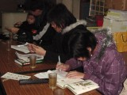

|
| 1. Where can we do birdwatching along Hsien-Hsi beach? How many species of the birds can we watch? |
| The main place for birdwatching is close to the north coast of Rouzongjiao and Ching-An drain in recent years. This is because Eurasian curlew will roost there during the winter and the area of Ching-An drain is a broad natural birdwatcing zone. During the winter, many birds will feed and roost there. In fact, before developing Changhua Coastal Industrial Park, there were many places to do birdwatching. However, because of developing the industrial park, the habitats of the birds changed. Therefore, several birds move south to Han-Bao wet land. However, there are still many protected birds such as Little Tern, Curlew and so on along Rouzongjiao Beach. This is still the characteristic of the Hsien-Hsi beach. Mr. Wu said, “except to the birds, people can watch the crabs and the animals under water. |
| 2. Do you think the birdwatching platform, established by the BEC Engineering Corporation, has the function? |
| The birdwatching platform was established by BEC Engineering Corporation for feeding back the local. However, because of the special weather and geographic environment, the platform was always covered by the yellow sand in winter. Its function is not obvious. On the other hand, there are no place to hide when the wind blow the yellow sand. In addition, people cannot watch the birds from the platform because the habitat of the birds is the beach across the road. Although so, the bird platform introduces the birds in Changhua Coastal Industrial Park very clear. It has its contribution. Mr. Wu said, “if the forests could be plant to prevent the sand, the platform will add its effectiveness.” |
| 3. Does the Wild Birds Association provide the related service of birdwatching? |
The Wild Birds Association holds some regular group birdwatching activities every year such as The Migrants during the spring, The Eagles Fly in Bagua Mountain, Eagle Watching in Kending and Birdwatching in Jinmen. The activities in Hsien-His is mainly hold in April because of the migrants coming. Besides birdwatching in Rouzongjiao, we will take the people to Sheng-Gang and the extury of Dadu River.
The other birdwatching activities will accept the phone reservation. Above 15 people, there will be an introducer to introduce. People have to prepare the simple birdwatching outfits. As for the higher multiple telescope, the association will provide.
|
| 4. Is there any interesting story about birdwatching at Rouzongjiao Beach? |
Last year, Chinese Jeep Association want to held the Jeep Race in Rouzongjiao Beach. However, the race area is the breeding habitat of Little Tern and Kentish Plover. Because birds like Little Tern roost and breed on the rocks or even on the ground at beach, it is very easy to step on their light gray eggs. Therefore, we tell this association this situation and hope that they held the activity earlier.
However, the Jeep Race was hold at the same time. Although we and Environment Protection Union moved the nests to the side of the road beforehand, the broken eggs of Little Tern is everywhere after the race. And the moved eggs are given up by Little Tern and Kentish Plover. |
| 5. Do you have any suggestion for developing Rouzongjaio as a resort? |
Mr. Wu said 'the ecology tour' is very popular everywhere in the whole world.” If Rouzongjiao area want to become a resort, he provide some suggestions:
|
The Recent Situation |
The Strategies |
Environment |
The wind is very strong. Sometimes it looks like the view of the Sahara Desert |
Plant the forest
The government plans to build the habitats. |
Traffic |
While entering Changhua Coastal Industrial Park, the visitors have to pass the control area. Although the control is not strict, the traffic direction is a little unclear. |
Make the traffic direction more clear. |
The Plan of the Government |
Because the oyster racks are set in recent years, the habitats of birds were damaged. The habitat of protected Curlew is disappeared. This is really affecting the breeding of Curlew. In addition, the fishermen sometimes affect the birds’ feeding. |
The government should learn how to design the areas from the foreign authorities, such as the protected birds area, oyster farming area, fishing area and so on. |
While developing the coastal areas, we should evaluate the affection carefully. Because these areas are easily to be damaged but hard to restored. When the migrants don’t come here, it will be the result of incorrectly development. No matter how hard you try to save, the chance of the migrants coming back is rare.
Mr. Wu provided us a viewpoint: How to make birds more close to people? We can often see human and nature exist together well in other counties. However, the birds in Hsien-Hsi beach fear the people. Why? Now our government develops the travel industries actively. But “how to connect the community with the equipments” is worth thinking more. |
|
|
|
Interviewing the chairman of the Wild Bird Association |
 |
Our crews are recording the interview |
 |
| Group picture |
|